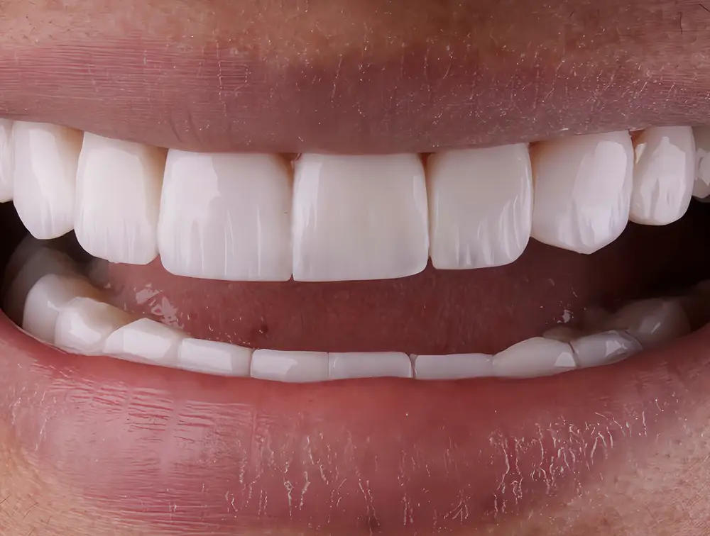
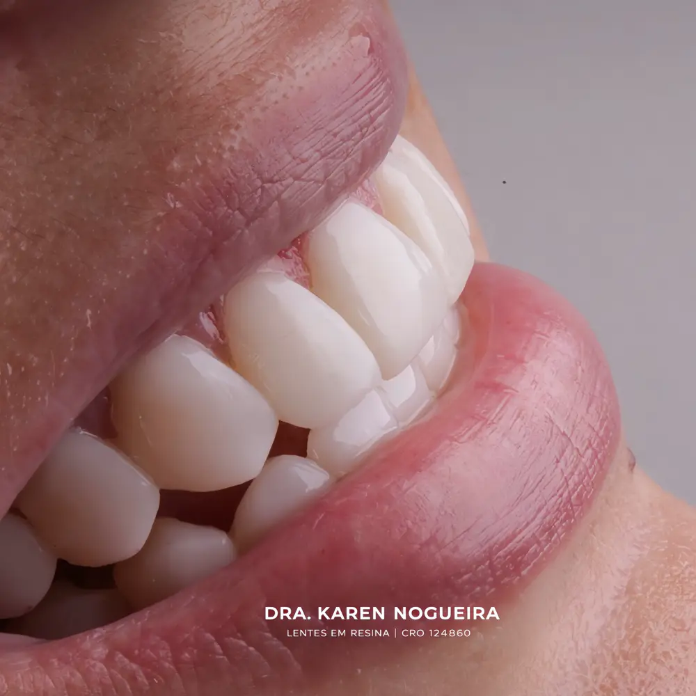
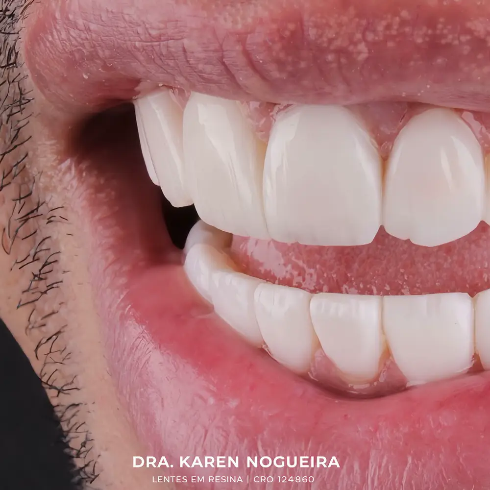
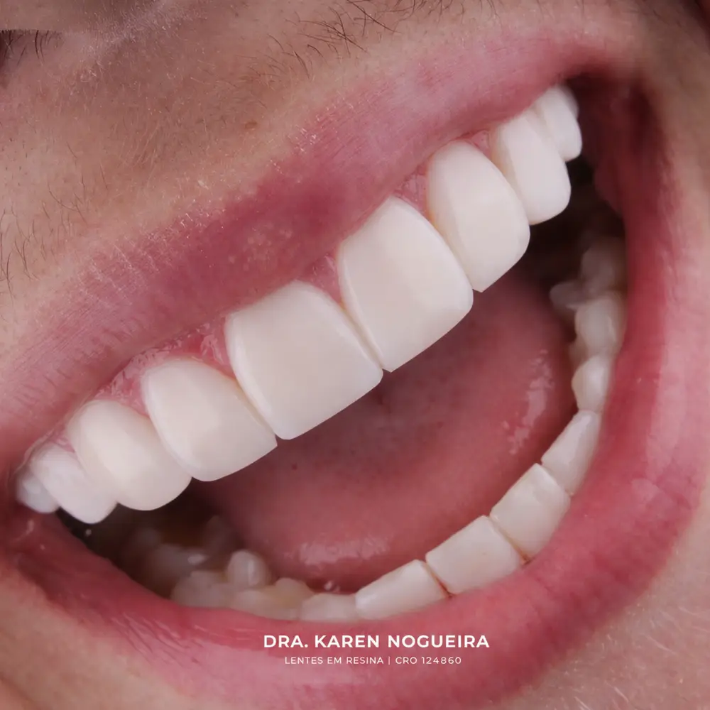
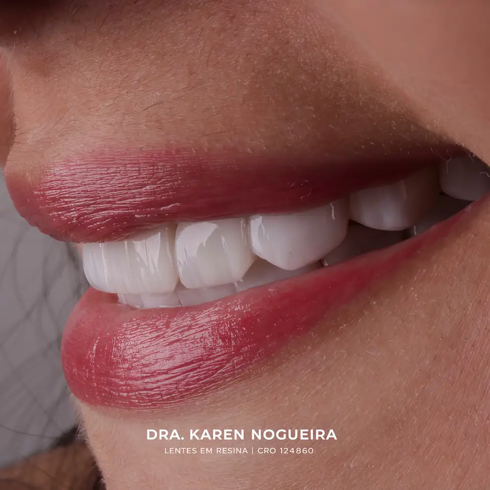
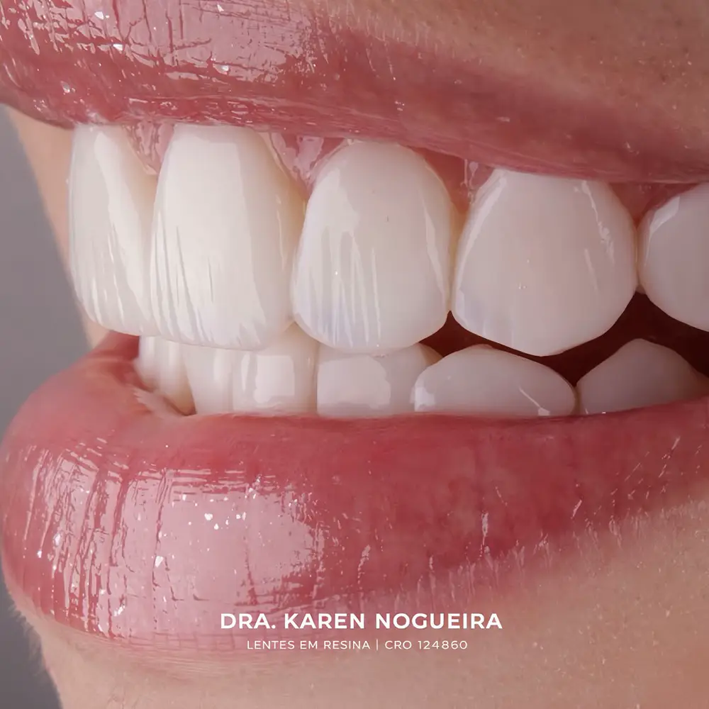
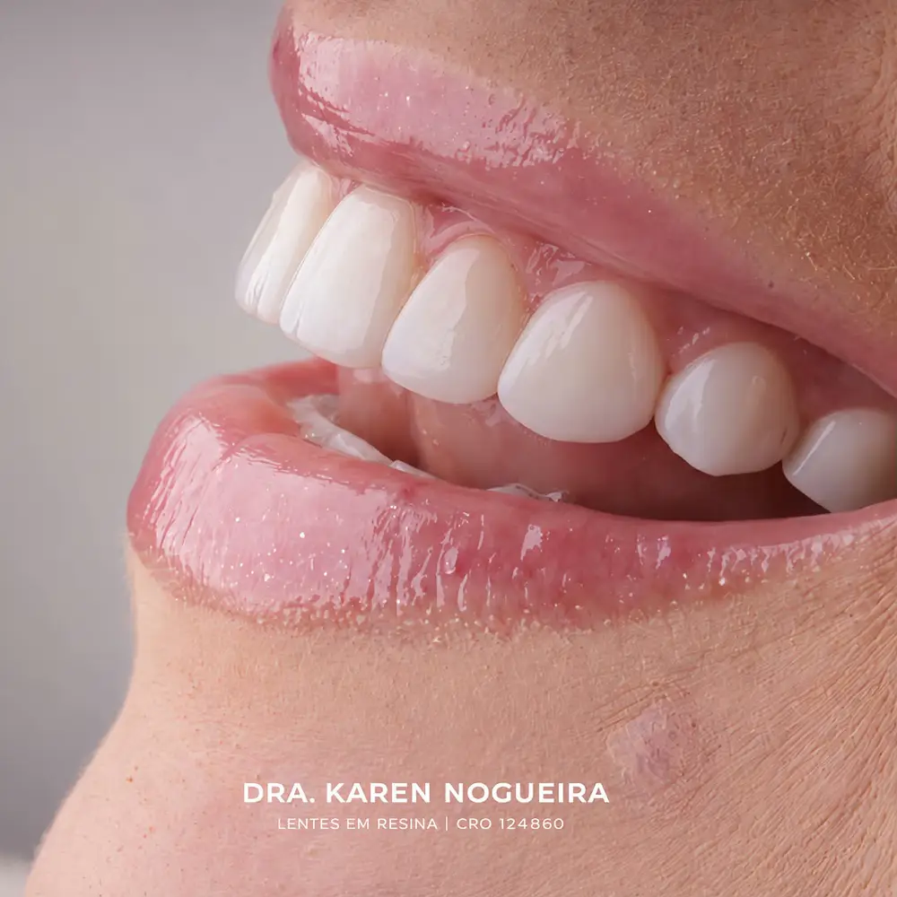

Lentes em resina composta
“Lentes em resina para trazer mais harmonia, proporção e naturalidade ao sorriso, respeitando a individualidade de cada paciente.”
legenda do postClínica Dra. Karen Nogueira · Lentes em resina
Fato 01, nas palavras dela
A espessura de uma lente pode ser menor que 0,5 mm.
São José do Rio Preto · SP
Mesmo assim, ela consegue transformar completamente o sorriso.
Agendar avaliação no WhatsAppMuitas pessoas ainda acham que lentes de resina deixam os dentes “artificiais” ou muito grossos. A verdade? Depende de quem faz.
— Dra. Karen Nogueira, no Instagram
Do carrossel publicado por ela
A espessura de uma lente pode ser menor que 0,5 mm.
Mesmo assim, ela consegue transformar completamente o sorriso.
0 — 0,5 mm · desenho fora de escala
O formato dos dentes não é escolhido “no olho”.
Ele é planejado para combinar com o rosto, os lábios e até com a forma como você sorri.
As melhores lentes são justamente as que ninguém percebe.
Quando ficam naturais, as pessoas elogiam o seu sorriso, não o tratamento.
Agende uma avaliação e vamos planejar o seu novo sorriso.
Conversar no WhatsApp
“Respeitando a individualidade de cada paciente.”
No Instagram dela
Sorrisos publicados pela Dra. Karen em @drakarenlnogueira, com as legendas dela. Cada sorriso tem planejamento próprio.






O que ela faz
“Lentes em resina para trazer mais harmonia, proporção e naturalidade ao sorriso, respeitando a individualidade de cada paciente.”
legenda do postEla publica casos de retrabalho de resina composta: refazer, com planejamento, o que já existe no sorriso.
post “Retrabalho de lentes em resina”“Recebemos a @lara_m.cardoso para fazer a troca das lentes. Foi um prazer cuidar de mais uma etapa do sorriso dela!”
legenda do post“Quer um sorriso harmônico, natural e com a sua essência?” O começo é uma avaliação, com um planejamento feito exclusivamente para o seu rosto.
legenda do post“O que andam falando de mim no Google”
“Atendimento impecável, muito atenciosa, cuidadosa e extremamente dedicada. O resultado ficou acima das minhas expectativas.”
“Dra Karen colocou minhas lentes, meus preenchimentos, uma profissional de confiança e qualidade.”
“Clínica limpa e organizada! Excelente profissional!”
“Antes de eu ter as lentes eu tinha uma insegurança total de dar aquele sorrisão.”
Trechos das avaliações que a própria Dra. Karen publicou neste post.
Siga no Instagram
Os sorrisos, o dia a dia da clínica e as dicas dela estão lá.
Agende sua avaliação